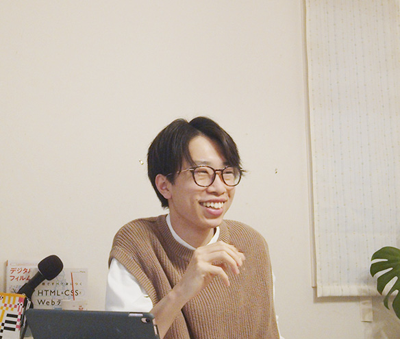

Hibiki Morita
昔からスポーツが好きでこれまでに体操、水泳、サッカー、陸上をやっていたので運動は得意だったが、
勉強は苦手で学校の成績は良くはなかった。でも、好きなことに対する熱量や好奇心は旺盛だったので、
趣味が多く、写真や映像にテクノロジーやプログラミング、色んなことにチャレンジをしている。
今、最もチャレンジしてみたいことは起業である。
小学校：運動大好き少年
中学校：LINEのアイコンをコロコロ変えていた
高校生：読書に目覚める
大学生：〜
小さい頃から今まで人にだけは恵まれ続けている。
